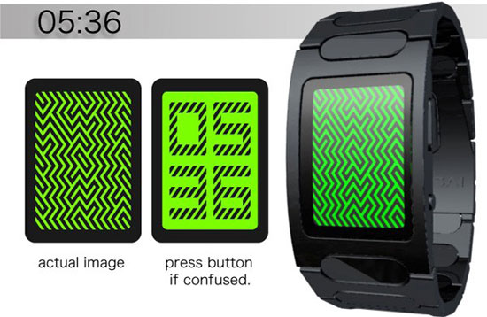
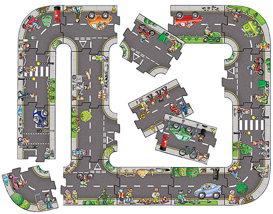
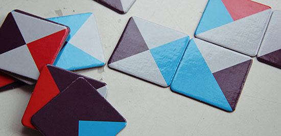
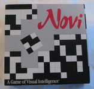
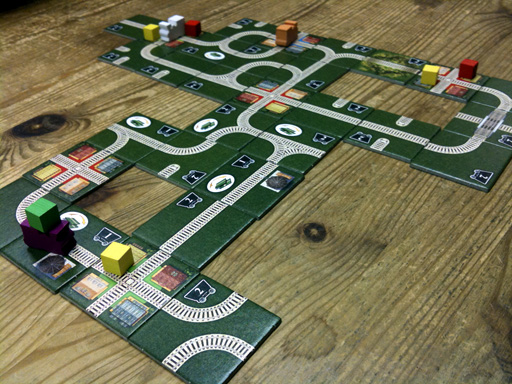

Web Articles
A few ideas found while trawling the web.
Tokyo Watch
|  |
A concept watch for now (source: Tokyoflash). The numerals are represented as one type of almost Truchet tile design on a background of another. Must make reading the time very difficult.
You can use the [Stage] to create a similar effect. Use the Blocks to draw out numerals or letters on a clear stage. Then select 'same menu hold' and switch to say diagonal tiles. Very hard to read, if not quite a secret message.
Izzi
A complete set of Wang tiles with four different types of edge is 4^4= 256 tiles. The tileset forms the basis of some tile matching puzzles.
One such similar puzzle is sold as IZZI by ThinkFun. It uses a reduced tileset of 64 tiles as rotational symmetry tiles are removed, plus these 6 tiles:
|
|

Giant Road Puzzle by Orchard Toys
Large coloured pieces for young children to build road layouts and which can then be used with toy cars etc. No dead-ends or cross road pieces. A number of suggested layouts shown on their website. Total of 20 pieces.
|  |
Mozza
Mozaa is an edge matching game. Players use 64 unique color combination tiles to build the largest color field. A colorful combinational layout between domino and mosaic.
|  |
4th Corner
A tile laying game. Make your way out of the maze, by opening up paths for yourself, and closing them off for other players.
 |
Novi Board Game
A multi player tile matching game containing 256 tiles. Each tile has 9 squares colored black or white. This gives 2^9 = 512 combinations. Each tile is printed on both sides, the two patterns being the complement of each other. See BoardGameGeek for more info. |
 |
Trifusion Board Game
A multi-player tile matching game called Trifusion. Each tile is is a 3 corner Wang tile colored blue, yellow or green. This gives 4^3 = 256 combinations, reduced to 24 tiles by removing self-similar rotations. See BoardGameGeek for more info. |
 |
Rivers, Roads and Rails
A tile matching game for younger children. It is slightly illogical, with not all combinations of tile present, but it creates a pleasing layout of road, rail and flowing river.
 |
Days of Steam
A train-themed, tile-laying game.
|  |
Knot Competitive
A new board game designed by Patrick Crowe. It's played with small, 1" square tiles. Each tile has a unique image of one to four strands drawn across its face. There are 150 tiles in the set, 144 of them unique, and the backside of every tile is the mirror image of the front. Read more and comment on Patrick's game at BoardGameGeek. |
|
Dice
| If you're creating a random tile layout then don't try to pick random tiles yourself. If you're human you'll end up with discernable patterns or clumping. Use a 16 sided die like this (sold in pairs on ebay). |  |
Ceramic Tiles
If you are ordering ceramic (or carpet) wall or floor tiles then rotations count as one tile. Especially if the design is a simple graphic without shadows or 3d effects. This reduces the set to only 3 tiles. However, a blank tile is usually included in a ceramic tileset.
Note that reflections can also count as one tile if the tiles are printed on glass or transparent plastic. In which case they can be turned over.
Also see Warren Street maze tiles.